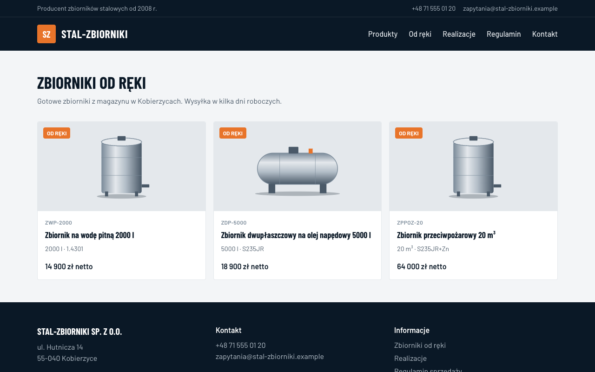

Zmiana w firmie staje się zadaniem, agent robi z niego zmianę na stronie, a człowiek ją zatwierdza jednym kliknięciem.

Próba 19.09.2026 · agent: OpenCode w jednorazowym kontenerze · model: Claude Sonnet 4.5 (OpenRouter)
check site zielony: build + Playwright na zbudowanej stronie · podgląd na Vercelu dla każdego PR
Linear i Copilot widzą repo. My widzimy firmę.
Open Mercato (MIT) + Agent Orchestrator (enterprise, source-available). Nasze moduły to zwykłe moduły Open Mercato.
| Agenci w repo | Fabryka na Open Mercato | |
|---|---|---|
| Start | ticket albo prompt programisty | nowy produkt, zrealizowane zamówienie, poprawka rekordu |
| Dane | tylko to, co jest w kodzie | katalog, klienci, zamówienia i to, co agent pobierze z sieci |
| Kto zatwierdza | programista czyta diff | właściciel ogląda podgląd; prawnik tylko przy tekście prawnym |
| Wynik | PR | PR, zmiana rekordu albo wiadomość, zawsze podpięte do zadania |